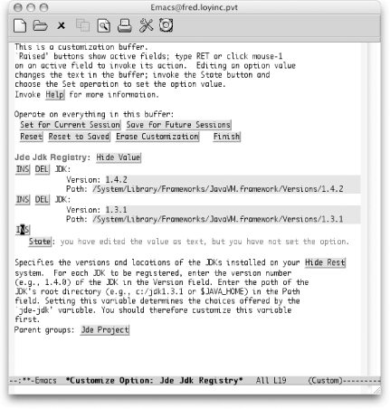
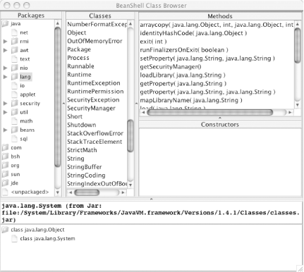
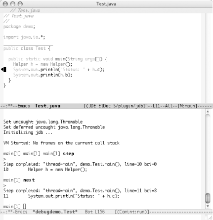

|
|
< Day Day Up > |
|
9.5. The Java Development Environment for Emacs (JDEE)While you can certainly get started right away with the built-in Java mode, if you do more than occasional Java programming, you might want to venture into the world of Paul Kinnucan's Java Development Environment for Emacs (JDEE). It takes Emacs into the realm of Java IDE. You won't find a GUI builder, but everything else is in place and ready to roll. 9.5.1 Getting StartedYou can pick up the latest version of the JDEE online from http://jdee.sunsite.dk/.[10] This site is essential to getting the JDEE up and running. You'll find all sorts of tips and tricks and full user documentation on all of the bells and whistles is available.
Before you can install the JDEE, you'll need the following components:
9.5.2 Installing CEDETInstalling CEDET is fairly straightforward if you have a make command available. (For Windows users, you'll want to have the Cygnus Unix Distribution installed. It gives you access to a large subset of Unix tools which will come in handy far beyond the installation of the JDEE.) After you download the CEDET distribution from SourceForge, unpack it wherever you want it to reside. Open a terminal window (or start a Cygwin bash terminal on Windows) and change to the directory where you unpacked the distribution. From there you should be able to run the following command: shell$ make EMACS=/path/to/emacs That process will probably take a few minutes to complete. The Lisp files will be compiled for you. When the make command completes, you should be in good shape. The last step for CEDET is to update your .emacs file: ;; Turn on CEDET's fun parts
(setq semantic-load-turn-useful-things-on t)
;; Load CEDET
(load-file "/path-to-cedet/common/cedet.el")9.5.3 Installing the ELisp LibraryInstalling the ELisp library package from the JDEE site is also straightforward. Unpack the downloaded file wherever you like, but before you run the make command, you'll need to edit the Makefile and configure the entries outlined in Table 9-5 to match your system.
Run the make command with the install option to get everything set up: shell$ make install The last step for the ELisp library is to make sure the Emacs defaults acknowledge the new package. You simply need to add the new directory to your load-path variable, as described next. The ELisp library actually provides a simple template file that matches where you installed the package. After the make process completes, you should have an elib_startup.el file in the directory where you ran the make command. That file contains the line you'll need to add to your .emacs file or you can merge it with the system default.el file for everyone to use. (The default.el file is often found in your site-lisp directory. Chapter 11 has more details.) 9.5.4 Installing the JDEEFive basic steps are required to install the JDEE on your system:
The previous section covered the first step. Make sure you take care of those prerequisites before continuing. The next steps can be handled in your .emacs file. The JDEE site proposes the following entries as a minimal setup; we excerpt them here (with one or two small tweaks) for easy reference. ;; This .emacs file illustrates the minimal setup
;; required to run the JDEE.
;; Set the debug option to enable a backtrace when a
;; problem occurs.
(setq debug-on-error t)
;; Update the Emacs load-path to include the path to
;; the JDEE and its require packages. This code assumes
;; that you have installed the packages in the
;; /usr/local/emacs/site-lisp directory. Adjust appropriately.
(add-to-list 'load-path
(expand-file-name "/usr/local/emacs/site-lisp/jde/lisp"))
(add-to-list 'load-path
(expand-file-name "/usr/local/emacs/site-lisp/semantic"))
(add-to-list 'load-path
(expand-file-name "/usr/local/emacs/site-lisp/speedbar"))
(add-to-list 'load-path
(expand-file-name "/usr/local/emacs/site-lisp/eieio"))
(add-to-list 'load-path
(expand-file-name "/usr/local/emacs/site-lisp/elib"))
;; If you want Emacs to defer loading the JDEE until you open a
;; Java file, edit the following line
(setq defer-loading-jde nil)
;; to read:
;;
;; (setq defer-loading-jde t)
;;
(if defer-loading-jde
(progn
(autoload 'jde-mode "jde" "JDE mode." t)
(setq auto-mode-alist
(append
'(("\\.java\\'" . jde-mode))
auto-mode-alist)))
(require 'jde))
;; Set the basic indentation for Java source files
;; to two spaces.
(add-hook 'jde-mode-hook
'(lambda ( )
(setq c-basic-offset 2)))
;; Include the following only if you want to run
;; bash as your shell.
;; Set up Emacs to run bash as its primary shell.
(setq shell-file-name "bash")
(setq shell-command-switch "-c")
(setq explicit-shell-file-name shell-file-name)
(setenv "SHELL" shell-file-name)
(setq explicit-sh-args '("-login" "-i"))
(if (boundp 'w32-quote-process-args)
(setq w32-quote-process-args ?\")) ;; Include only for MS Windows.Of course, you'll need to make sure the paths in the add-to-list 'load-path lines match the actual directories you're using. Compiling the JDEE Lisp files is not required, but as noted in "Byte-Compiling Lisp Files" in Chapter 11, it's a good idea and speeds up several operations including general startup times. The JDEE makes this step simple. After you have it installed, start Emacs and run M-x jde-compile-jde. You run this command only once, so it is definitely worthwhile. 9.5.5 Registering Your Java ToolsThe last step we need to cover is registering your Java development kits. This is not strictly necessary, but you don't want to skip this step. It is especially handy if you work in an environment where you have to test multiple versions of the JDK. With all of your kits registered in the JDEE, you can switch between versions with a simple variable change. To register a JDK, use the M-x customize-variable command. The variable you need to customize is jde-jdk-registry. That will land you in the interactive customization screen. You can select the INS (insert) button to add the version number and path of your JDK. You can repeat that process for as many JDKs as you want to register. See Figure 9-2 for a list of such entries on a Mac OS X system. Figure 9-2. Inserting JDK entries in a Custom listBe sure to hit the State button and save this state for future sessions. You can click the Finish button when you're done or just close the buffer. After you have your JDKs registered, you can switch to the active version using that same M-x customize-variable command. This time, edit the jde-jdk variable. You'll be prompted to choose one of the registered versions. You may or may not want to save this decision for future sessions. In any case, this variable can be edited at any time. 9.5.5.1 JDK tools.jar problemsThe compilation feature requires access to the tools.jar file (or the equivalents built-in to some JDKs). If the JDEE compile command fails with an error message about not being able to find the tools.jar file, your best bet is to customize the JDEE variable jde-global-classpath. Make sure that variable includes the tools.jar file. For some systems that do not have a tools.jar file[11], you can steal that file from another machine, but usually you just need to get your classpath and registry entries set up correctly. Customizing the variables in Table 9-6 should get you compiling and running without too much effort.
Whew! That was a lot of work. But the good news is that once you've made it through the installation process, you have all the spiffy features of the JDEE forever at your command. So let's get on with the features! 9.5.6 Editing with the JDEEFirst off, you're still in Emacs, so the usual motion commands described for Java mode (and C mode) still apply. But the JDEE adds two really great features to your editing cycle: command completion and class browsing. The idea behind command completion is that the JDEE can (usually) predict which methods and variables are valid choices to make at certain points in your Java program. For example, if you start typing System. in your program, there are a finite number of choices for what follows that period. JDEE can display a list of those choices. The command to show your list of completions is C-c C-v C-. (for jde-complete), which defaults to showing you a menu of completions. (You can change that behavior by customizing the jde-complete-function variable.) The completions are generated by looking at all of the classes listed in the jde-global-classpath variable (or the CLASSPATH environment variable if no global classpath was defined). The class browser can be accessed quickly from the JDE menu and launches a BeanShell browser for the class your cursor was on. It's like a context-sensitive documentation tool, but a bit more powerful. Figure 9-3 shows what you get when starting the browser while your cursor is on the word System. Figure 9-3. The BeanShell class browser launched from the JDEEYou can also launch the class browser with the M-x jde-browse-class-at-point command. One other edit-time feature worth pointing out is the Code Generation item in the JDE menu. It has some great timesavers built-in, as shown in Table 9-7.
Other helpers are available from the JDE menu. Generate Get/Set Pairs in particular is great for working with JavaBeans design patterns. Just create your list of attributes and then run the wizard. It even checks to see if you already have an existing get/set pair. If you do, it notes that get/set pair as "existing" and keeps on trucking so you can use the wizard to update existing classes. 9.5.7 Compiling and Running with the JDEECompiling the current buffer can be done quickly with the C-c C-v C-c command. Any errors show up in the compilation buffer. That compilation buffer also allows you to navigate quickly to any errors that the compiler finds. Simply move your cursor to the error in question (using the normal motion commands) and hit Enter. You'll find yourself in the right file on the right line number. Very handy indeed. Note that you can also run ant builds with M-x jde-ant-build. Check out the JDEE documentation or the help for various jde-ant variables for more information. Running a simple program that has its own main( ) method is easy: just press C-c C-v C-r. That command executes the current buffer (by opening an execution buffer named *fully.qualified.ClassName*). Any output from the program shows in the buffer. You can move around in the buffer just as you would in a normal text buffer. Of course, if you are working on anything other than a simple test class, you'll probably be in a package. Java's use of the classpaths rarely leaves room for being at the "bottom" of a package hierarchy. For example, in the package com.oreilly.demo, you want to start execution from the same directory that contains the com directory, not from the demo directory that contains the actual Java files. Regrettably, the demo directory is the default. You can edit the following variables to make executing in larger projects a bit more convenient:
With those values set, you should be able to run your application from any buffer, regardless of what directory the file you're editing happens to be in. Another fun note about running your application through the JDEE: if any stack traces appear because of exceptions, you can navigate those traces by using the C-c C-v C-[ and C-c C-v C-] commands (up and down, respectively). Again, Emacs makes it possible to manage quite a large portion of a development project all from one interface. 9.5.8 Debugging with the JDEEA crucial element in any good IDE is its debugger. The JDEE allows you to stay in the Emacs realm while interacting with the jdb process. The JDEE also comes with its own debugger, the JDEbug application. JDEbug is more powerful but requires more setup effort.
We'll look at the jdb route just to get you started. You can start the debug session by typing M-x jde-jdb. The same variables that control the starting directory and main application class are used for debugging purposes. After you have launched the debugger, you can control the debug process in a number of ways.
Figure 9-4 shows a simple application running in debug mode. Notice the small black triangle to the left of the Java source code in the upper buffer. That's the debug cursor that lets you know where you are in the file. It tracks the commands you issue, whether by directly entering jdb commands, by menu option, or through the keyboard. Figure 9-4. Debugging a Java application with jdb9.5.9 Learning More about the JDEEClearly, there is a lot more to the JDEE than we can cover here. The package you download comes with some good documentation and several user guides for the basic JDEE and various options like the debuggers. The JDEE web site, at http://jdee.sunsite.dk, is a great source of information, too. As you would expect from an Emacs package, you can customize everything. Those customizations are stored in your .emacs file so you can tweak them by hand (or at least peek at them). The best approach is to install the JDEE and start coding with it. If you find yourself saying "There should be a way to do X," get out the documentation. Chances are there is a way to do X—usually with more options than you could hope for! |
|
|
< Day Day Up > |
|